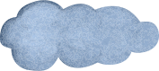
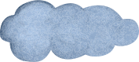

Herten behoren tot de familie Cervidae en er zijn meer dan 50 soorten herten in de wereld.
Het mannetje Van hertensoort wordt een 'bok' genoemd, terwijl het vrouwtje een 'hinde' wordt genoemd.
Herten kunnen goed rennen, sommige soorten kunnen snelheden tot wel 80 kilometer per uur bereiken.
Herten hebben een uitstekend gehoor en reukvcrmogen, waardoor ze zich goed kunnen aanpassen aan hun omgeving en gevaren kunnen vermijden.
Het gewei van een mannelijke hert groeit elk jaar en kan tot wel meter worden.
Herten Zijn herbivoren en voeden zich met bladeren. gras, scheuten. schors. paddenstoelen en andere vegetatie.
Sommige hertensoorten Zijn sociale diercn en leven in groepen, terwijl andere soorten solitair zijn en allecn 'even.
Herten hebben ecn uitstekend gezichtsvermogen en kun nen kleuren onderscheiden. waardoor ze roofdieren kunnen detecteren en gevaren kunnen vermijden.
Herten zijn vaak een belangrijke prooi voor roofdieren zoals wolven. beren. leeuwen en tijgers.
Herten spelen een belangrijke rol in veel culturen en worden Vaak geassOcieerd met gratie. kracht en snelheid.
 
